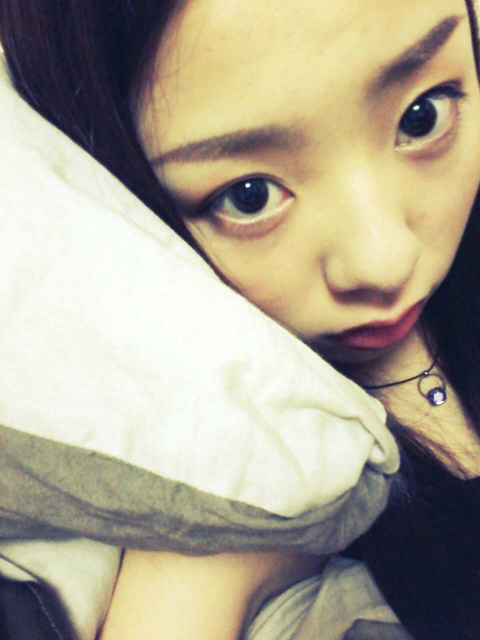

| 2012/07 11 Wed | 川村真洋 生誕祭★☆★ 質問返し。 ろってぃー♪ |
ほーい。
ろてぃ子です(*・・*)
( ↑ みさみさの呼び方 )

コメントたくさん
ありがとうございます。
今週の『 乃木どこ? 』で
まひろの生誕祭やって
頂きましたー`・ω
まひろの おっしり〜))から
始まって
チョコまみれになり
人生初の家出に
小学生の映像
中学生の映像... と
色々と出てきました^ω^
自分も何の映像が
出てくるか全く知らなかったので
びっくりしました☆
一つ 中1の夏 海の家で
踊ってた時のことで
ハプニングが
あったんです>_<
あの時 ダンス終わった後
海入ろうと思ってて
服の下 ビキニ
だったんですねえ,
ほんで,音楽なって
踊り出した瞬間
紐がとれてもーた。
って話です...。☆笑
まあ、中1やから良かった(⌒‐⌒)
いつも本番で何かしら
ハプニングが起きるんだよ=ω=。
絶対間違わないとこで
間違ったり
編みタイツが破れたり...。
たっくんだよ本当´ω`笑
後,まひろ赤ちゃんの頃
ヤンチャな顔し過ぎやw>ω<=笑
あっ... ゆったん♪の
歯の抜き方には
驚いたっ>ω<))
ってことで
質問返しです*^^*
★ろってぃーってメンバーの
ダンス講師?
☆よく『ここどうやったら
上手く踊れるの?』って
聞かれる時とかあるんですけど
やっぱ 教えてほしい とか
言われると嬉しい気持ちに
なります^^
★ろってぃーのために
来ました。って言ったんだけど
覚えてるかな...?笑
☆ぅん 言われた...
確かに言われた!
覚えてるっ☆!!
★握手会大変だったでしょ?
でもろってぃーはスタミナ
ありそうだから
平気だったのかな?
☆10分休憩の間に
急いで,チョコや栄養ドリンク等で
スタミナたくわえてるんで、
皆様と握手してる時は
元気元気*^ω^*
★3rd個別も遊びに
行こうかな?
☆是非(*^^*)
待ってますねっ♪
★「サスケ」
4th行こうのシングルの
カップリング曲に入れて
もらえないかなぁ〜?
☆ありがとう(⌒‐⌒)
嬉しい♪
いつかフルで聞いてもらえる時が
来るのを夢見てます。
★(・¢・) 鼻ピ,これって
ろってぃーのオリジナルなの?
☆おんっ♪ オリジナル。
周りで使ってる人
見たことない...^ω^
★まひろ目大丈夫か?
また充血してたよな?
痛くはないのかな?
☆んー,まひろ目悪くないよう*・ω・*
両目 1,5 1,5
完璧っ☆ニッ/
★ホワイトチョコは好き?
☆だーいすきっ*・ω・*
★疲れてるのに踊ってたの?
☆朝いちとか皆眠くて
テンション低い時に
自分のテンションを上げるために
高くジャンプしたり体動かして
気合い入れたりする=・¢・=♪
握手会終わった後は
控え室戻っても
テンションが上がったままで
楽しい気持ちだったからさ^^
以上っ))
ろってぃーでした♪のし